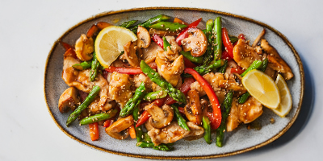

Gentle Vegetable Stir Fry
A warm and colorful stir fry cooked with light seasonings. Easy to digest and perfect for evenings when you want something comforting but not heavy.
End your day with meals that bring comfort without discomfort. These dishes are warm, calming, and designed to help your body relax while still giving you the nourishment you need.
See dinner recipes
Dinner is the moment your body begins to wind down. Eating meals that are gentle and balanced helps
you avoid discomfort at night and supports better rest.
Choosing calming ingredients can make your evenings feel smoother and more peaceful.
SafeBites helps you find dinner ideas that support digestion, reduce triggers, and still let you enjoy all the flavor. These dishes keep you comfortable while ending your day in a comforting way.
Filter the recipes by the diet of your preference:
A warm and colorful stir fry cooked with light seasonings. Easy to digest and perfect for evenings when you want something comforting but not heavy.

A gentle bowl with soft rice and tender protein. This dish feels calming while providing steady nourishment for the evening.
A simple pasta dish with gentle tomato flavors. Great when you want something cozy that still sits comfortably.
A warm, soothing soup that is gentle on digestion. Ideal for evenings when you want something soft, warm, and relaxing.
A simple and calming dish made with steamed rice and seasoned vegetables. Mild, filling, and friendly to sensitive stomachs.